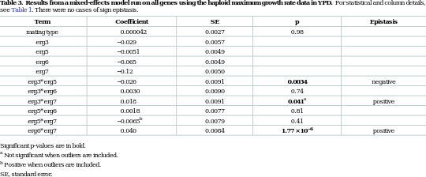

<?xml version="1.0" encoding="UTF-8"?>
<table title="table3" id="table3" class="tabcontent" xmlns="http://www.w3.org/1999/xhtml">
 <tr>
  <td>
   
   <p>corpus-oa-validation/10.1371_journal.pbio.1002591/tables/table3/table.svg.png</p>
  </td>
  <td>
   <table class="table">
    <caption/>
    <tr>
     <th class="cell">Significant p-values are in bold. ^{a} Not significant when outliers are included. ^{b} Positive when outliers are included. SE, standard error. </th>
    </tr>
   </table>
   <p>corpus-oa-validation/10.1371_journal.pbio.1002591/tables/table3/table.svg.html</p>
  </td>
 </tr>
</table>
